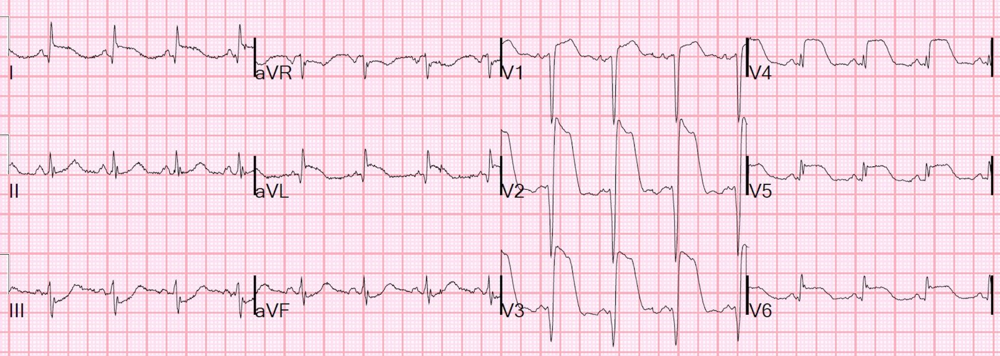
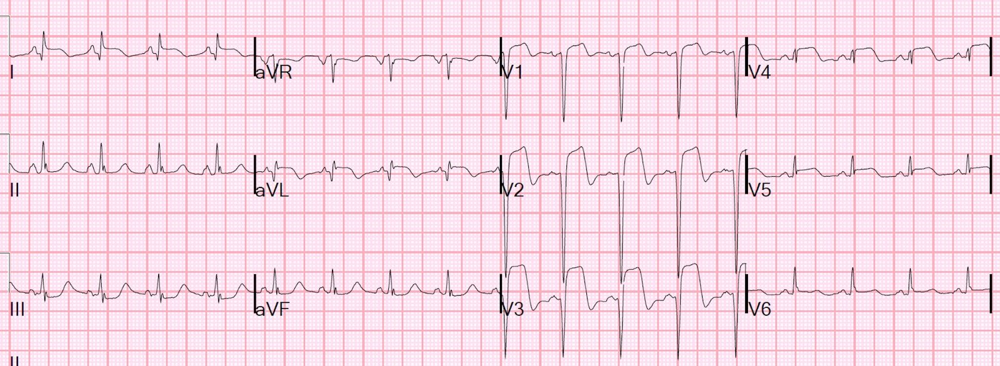
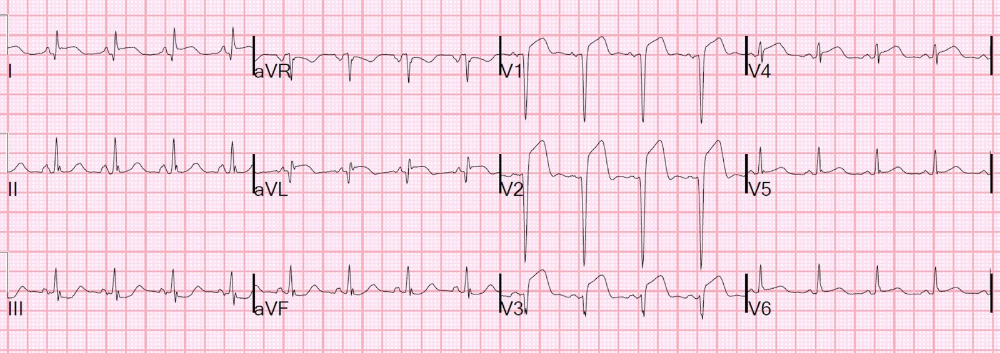
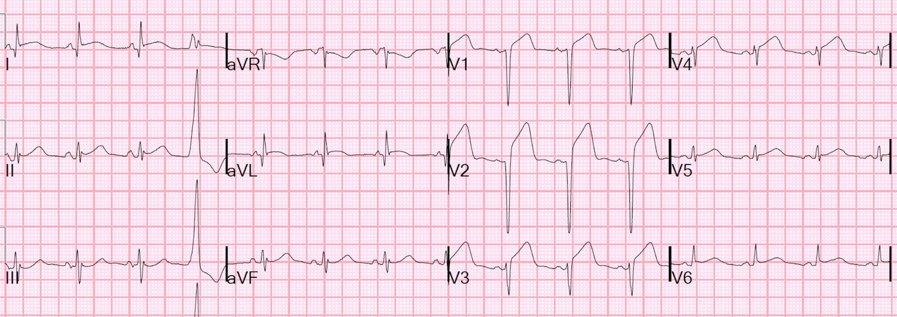
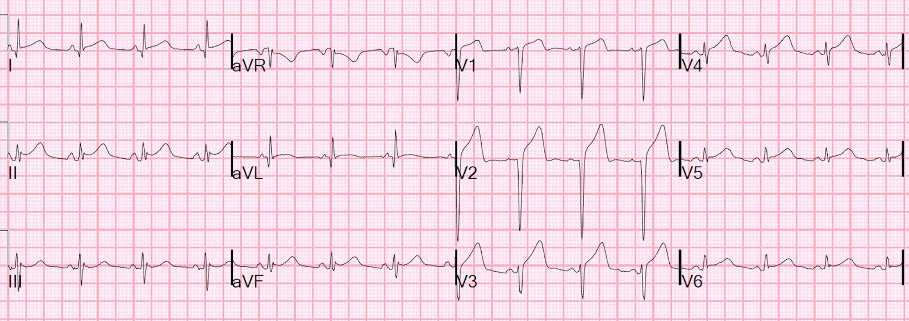
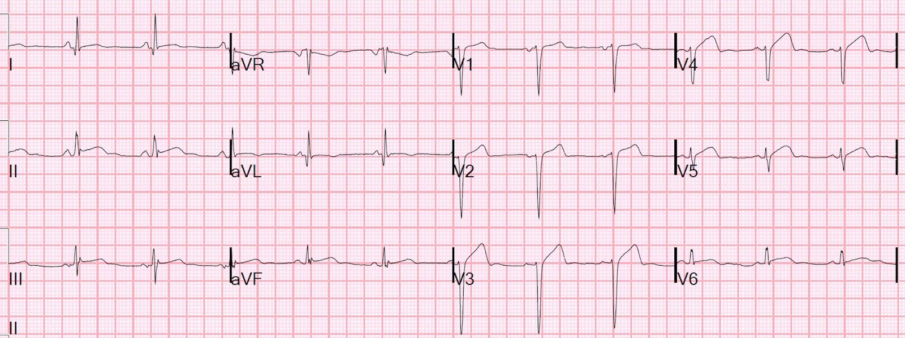

11/03/2016 — Sóng T tái tưới máu ban đầu, sau đó giả bình thường hóa. Chẩn đoán?
Bản dịch tiếng Việt của bài "Initial Reperfusion T-waves, Followed by Pseudonormalization. Diagnosis?" – Dr. Smith’s ECG Blog. Giữ nguyên toàn bộ 6 hình ảnh của bản gốc.
Một phụ nữ trung niên bị đau thắt ngực từng cơn trong 48 giờ, sau đó khởi phát đau ngực dữ dội như bị bóp nghẹt, liên tục, kéo dài 1,5 giờ thì bà gọi 911. Điện tâm đồ trước viện giống hệt điện tâm đồ đầu tiên tại khoa cấp cứu (ED), và phòng thông tim (cath lab) đã được kích hoạt:


Hình ảnh này chẩn đoán nhồi máu cơ tim trước-bên diện rộng và RẤT cấp (KHÔNG phải bán cấp) do tắc LAD đoạn gần.
Sóng Q xuất hiện ở 50% trường hợp nhồi máu cơ tim thành trước ngay trong giờ đầu tiên. Chúng KHÔNG chỉ ra nhồi máu cơ tim muộn, bán cấp. ST chênh lên quá cao so với một nhồi máu cơ tim bán cấp.
—-Raitt MH, và cs. Appearance of abnormal Q waves early in
the course of acute myocardial infarction: implications for efficacy of
thrombolytic therapy. Tạp chí J Am Coll Cardiol 1995; 25:1084-1088.
“Điểm ST” (ST score) > 40 mm, mức cực kỳ cao và tương quan chặt với tỷ lệ tử vong cao, cũng như sự hiện diện của sóng Q. Có cả một khối y văn từ thời kỳ tiêu sợi huyết cho thấy điểm ST cao tương quan với tỷ lệ tử vong cao (xem thư mục có chú giải bên dưới, trích từ sách của tôi The ECG in Acute MI).
Chụp mạch vành: tắc 100% LAD đoạn giữa sau nhánh xuyên vách thứ nhất (S1) và tại chỗ chia đôi của LAD đoạn giữa với nhánh chéo thứ nhất (D1), cản trở dòng chảy xuống cả hai nhánh. Dòng chảy TIMI bằng 0. Tổn thương được điều trị bằng kỹ thuật hai “bóng hôn nhau” (kissing balloons) và stent phủ thuốc. Thời gian từ cửa đến bóng (door-to-balloon) là 51 phút.
Đây là điện tâm đồ sau đặt stent:


Diễn biến troponin I thế hệ hiện hành (contemporary)
mốc thời gian ban đầu (time zero): 1,28 ng/mL
thời điểm 1,5 giờ: 0,75
thời điểm 4,5 giờ: 56,1
thời điểm 7,5 giờ: 61,0
thời điểm 10,5 giờ: 53,9
Siêu âm tim chính thức 6 giờ sau:
1. Giảm chức năng thất trái, EF 35-40%
2. Rối loạn vận động thành khu trú – vách liên thất đoạn xa, thành trước, thành trước-bên và mỏm
3. Huyết khối thất trái, đường kính 1,5 cm ở mỏm
Sự hiện diện của huyết khối khiến các bác sĩ lâm sàng kết luận đây là một “STEMI đến viện muộn (late presentation STEMI)”. Huyết khối đúng là cần một thời gian để hình thành, nhưng điện tâm đồ và diễn biến troponin cho thấy đây KHÔNG phải là STEMI đến viện muộn. Nhiều khả năng hơn, bệnh nhân bị đau thắt ngực tăng dần (crescendo angina), với thiếu máu cục bộ CÓ HỒI PHỤC kéo dài 48 giờ, và chỉ đến thời điểm đó mới trở thành tổn thương có khả năng không hồi phục (STEMI). Trong 48 giờ đau thắt ngực, tình trạng thiếu máu cục bộ có hồi phục như vậy thường dẫn đến choáng cơ tim (myocardial stunning) với vô động thành cơ tim, khiến vùng này có nguy cơ hình thành huyết khối.
Sáng hôm sau, điện tâm đồ này được ghi 8 giờ sau điện tâm đồ đầu tiên:


Hiện tượng sóng T trở lại dương này được gọi là giả bình thường hóa (Pseudonormalization) và có hai nguyên nhân:
1. Tắc lại
2. Viêm màng ngoài tim khu trú sau nhồi máu (Post-infarction Regional Pericarditis, PIRP)
PIRP xảy ra khi nhồi máu cơ tim là xuyên thành, lan suốt từ lớp dưới nội tâm mạc đến lớp dưới thượng tâm mạc, do đó gây viêm lớp dưới thượng tâm mạc (sát màng ngoài tim). PIRP liên quan đến nguy cơ vỡ cơ tim cao hơn.
—Phần này trích từ chương 28 của sách của tôi The ECG in Acute MI).
VỠ CƠ TIM VÀ VIÊM MÀNG NGOÀI TIMKHU TRÚ SAU NHỒI MÁU
NHỮNG ĐIỂM CHÍNH
· Vỡ
cơ tim xảy ra ở 1 đến 1,5% bệnh nhân AMI và thường xuất hiện sau
viêm màng ngoài tim khu trú sau nhồi máu (PIRP).
· PIRP
được chỉ điểm bởi sóng T dương kéo dài dai dẳng 48 giờ sau khởi phát
AMI.
·
Rất có thể là PIRP nếu sóng T đảo ngược đảo chiều sớm
trở thành sóng lệch dương
·
Bất kỳ bệnh nhân STEMI nào bị sốc đều có thể có chèn ép tim, thường do vỡ
cơ tim.
·
Siêu âm tim tại giường có thể dễ dàng xác nhận vỡ cơ tim.
Ca bệnh tiếp diễn:
Lúc này bệnh nhân đau ngực trở lại, nhưng đau kiểu màng phổi và thay đổi theo tư thế, nên được cho là PIRP. Chẩn đoán điều này chỉ dựa trên triệu chứng (không chụp mạch vành) là hơi mạo hiểm, vì tắc lại có thể gây tử vong. Nhưng nhận định này đã đúng, vì troponin tiếp tục giảm.
Một điện tâm đồ được ghi 16 giờ sau điện tâm đồ đầu tiên:


Điện tâm đồ này được ghi 30 giờ sau điện tâm đồ đầu tiên:




Vỡ cơ tim và viêm màng ngoài tim sau nhồi máu.
Điện tâm đồ trong vỡ cơ tim
94. Oliva PB, Hammill SC, Edwards WD. Electrocardiographic diagnosis of postinfarction regional pericarditis: ancillary observations regarding the effect of reperfusion on the rapidity and amplitude of T wave inversion after acute myocardial infarction. Tạp chí Circulation 1993; 88:896-904.
Phương pháp: Oliva và cs. (94) nghiên cứu 200 bệnh nhân AMI
liên tiếp và so sánh diễn tiến điện tâm đồ với sự xuất hiện PIRP được chẩn đoán dựa trên
các triệu chứng và dấu hiệu lâm sàng điển hình, gồm đau ngực, đau vai
trái hoặc đau vùng xương bả vai kiểu màng phổi – thay đổi theo tư thế, hoặc tiếng cọ màng ngoài tim, mà không có tăng trở lại CK-MB.
Kết quả: Trong 200 bệnh nhân, 43 người (21,5%) xuất hiện
PIRP, tất cả đều biểu hiện một trong
hai kiểu diễn tiến sóng T
bất thường (độ nhạy 100%). Típ I
là sóng T dương dai dẳng >/= 48 đến 72 giờ sau
nhồi máu, gặp ở 29 (67%) ca PIRP. Độ đặc hiệu đối với PIRP là 100%. Típ II là sự đảo chiều sớm, từ từ
của sóng T đảo ngược thành sóng lệch dương >/= 48 đến 72 giờ sau khởi phát
AMI, gặp ở 12 (33%) ca PIRP.
Những bệnh nhân được hồi sinh tim phổi, bị tái nhồi máu hoặc có ổ nhồi máu
rất nhỏ nhờ tiêu sợi huyết cũng biểu hiện diễn tiến sóng T típ II. Độ đặc hiệu của típ II đối với PIRP là 77%. ST chênh lên lan tỏa của
viêm màng ngoài tim lan tỏa chỉ gặp ở 2 bệnh nhân (5%) bị PIRP. Các tác giả kết luận rằng sự “tái
đồng hướng” (re-concordance) sớm của sóng T sau AMI là một dấu hiệu nhạy, khá
đặc hiệu và dễ nhận biết của PIRP, và tái tưới máu
liên quan đến diễn tiến sóng T nhanh hơn và sóng T đảo ngược sâu hơn.
366. Oliva PB, Hammill SC, Edwards WD. Cardiac rupture, a clinically predictable complication of acute myocardial infarction: report of 70 cases with clinicopathologic correlations. Tạp chí J Am Coll Cardiol 1993; 22:720-726.
Phương pháp:
Oliva và cs. (366) so sánh đặc điểm lâm sàng và điện tâm đồ của 70 bệnh nhân AMI
bị vỡ cơ tim với dữ liệu của 100 bệnh nhân AMI không bị
vỡ.
Kết quả:
Bệnh nhân bị vỡ cơ tim có tỷ lệ PIRP cao hơn đáng kể, cũng như
nôn kéo dài, bồn chồn và kích động; 80% có ít nhất 2 triệu chứng
so với 3% ở bệnh nhân AMI không bị vỡ. Sai lệch khỏi kiểu diễn tiến bình thường của sóng T
xảy ra ở 94% bệnh nhân bị vỡ cơ tim và chỉ ở 34% bệnh nhân không bị vỡ. Vỡ thành bên đoạn giữa thứ phát sau
nhồi máu dưới-sau-bên do tắc động mạch mũ là thường gặp nhất
(34%).
Bình luận: Mặc dù khá đặc hiệu đối với PIRP, sự
sai lệch khỏi diễn tiến sóng T bình thường này không có giá trị tiên đoán dương (PPV) cao vì
tỷ lệ vỡ cơ tim tương đối thấp.
Điểm ST (ST Score)
109. Mauri F, Gasparini M, Barbonaglia L, và cs. Prognostic
significance of the extent of myocardial injury in acute myocardial infarction
treated by streptokinase. (the GISSI trial). Tạp chí Am J Cardiol 1989; 63:1291-1295
Phương pháp: Mauri và cs. (109)
phân loại điện tâm đồ của 8731 bệnh nhân GISSI-1 (được phân ngẫu nhiên dùng streptokinase (SK) hoặc giả dược, xem
Phụ lục) có ST chênh lên và không có nhồi máu cũ thành 4 nhóm: 1) nhỏ (ST
chênh lên ở 2 hoặc 3 chuyển đạo, 41% bệnh nhân); 2) vừa (4 đến 5 chuyển đạo, 25%); 3)
lớn (6 đến 7 chuyển đạo, 19%); và 4) nhồi máu rộng (8 đến 9 chuyển đạo, 15%). ST chênh xuống và độ cao của đoạn ST
không được xét đến.
Kết quả: Trong các ổ nhồi máu lớn hoặc rộng, 100% là
thành trước hoặc nhiều vị trí, và trong các ổ nhồi máu nhỏ, 93% là thành dưới. Mặc dù kích thước ổ nhồi máu, tỷ lệ tử vong, sự
xuất hiện sau cùng của sóng Q hoặc mất sóng R, và lợi ích từ SK có tương quan với
vị trí (nhồi máu thành trước là nặng nhất), chúng lại tương quan chặt hơn với số chuyển đạo bị ảnh hưởng. AMI nhỏ (</= 3 chuyển đạo) không tương quan
với lợi ích đáng kể về tử vong từ SK.
111. Bar FW, Vermeer F, de Zwaan C, và cs. Value
of admission electrocardiogram in predicting outcome of thrombolytic therapy in
acute myocardial infarction. Tạp chí Am J Cardiol 1987; 59:6-13.
Phương pháp: Bar và cs. (111) phân tích dữ liệu từ 488
bệnh nhân được phân ngẫu nhiên dùng SK trong mạch vành hoặc nhóm chứng.
Kết quả: Bệnh nhân có vị trí thành trước, điểm ST
cao (>12 mm với thành trước, > 6 mm
với thành dưới), ST chênh xuống rõ, hoặc có sóng Q thì được
hạn chế kích thước ổ nhồi máu nhiều nhất, đánh giá bằng chụp xạ hình thất
trái và CK. Ở cả
vị trí thành trước lẫn thành dưới, khi không kèm sóng Q, không thấy hạn chế đáng kể ở
bệnh nhân có điểm ST thấp, NHƯNG khoảng tin cậy rộng.
122. Lee KL, Woodlief LH, Topol EJ, và cs.
Predictors of 30-day mortality in the era of reperfusion for acute myocardial
infarction: results from an international trial of 41,021 patients. Tạp chí Circulation
1995; 91:1659-1668.
Phương pháp: Lee và cs. (122) phân tích
dữ liệu GUSTO-1 (xem Phụ lục).
Kết quả: Tỷ lệ tử vong là 9,9% với toàn bộ AMI thành trước so với
5,0% với toàn bộ AMI thành dưới (tất cả bệnh nhân đều được dùng thuốc tiêu sợi huyết).
Bình luận: Nghiên cứu này KHÔNG phản ánh tính không đồng nhất
của nhồi máu cơ tim thành dưới; dù tỷ lệ tử vong thấp ở nhồi máu thành dưới đơn thuần, tỷ lệ tử vong lại cao ở nhồi máu dưới-sau, dưới-thất phải và dưới-bên.
117. Vermeer F, Simoons ML, Bar FW, và cs. Which
patients benefit most from early thrombolytic therapy with intracoronary
streptokinase? Tạp chí Circulation 1999; 74:1379-1389.
Phương pháp: Vermeer và cs. (117) phân tích điện tâm đồ,
chụp xạ hình thất trái và dữ liệu giải phóng men tim của 533 bệnh nhân
được phân ngẫu nhiên dùng SK trong mạch vành so với nhóm chứng (không dùng SK).
Kết quả: Tiêu sợi huyết bằng SK đem lại mức
hạn chế kích thước ổ nhồi máu lớn nhất ở bệnh nhân có AMI lớn hơn xét trên điện tâm đồ
(sóng Q mới lớn, ST chênh lên cao, ST chênh xuống soi gương, và
AMI thành trước) hoặc ở những người nhập viện trong vòng 2 giờ kể từ khởi phát triệu chứng. Trong số tất cả bệnh nhân có điểm ST < 12 mm, những người được dùng
SK > 2 giờ sau khởi phát triệu chứng không cho thấy lợi ích nào về
tỷ lệ tử vong, chức năng thất trái đánh giá bằng chụp xạ hình thất trái, hay
kích thước ổ nhồi máu theo men tim, so với những người không được dùng thuốc tiêu sợi huyết.
123. Gwechenberger M, Schreiber W, Kittler H, và
cs. Prediction of early complications in patients with acute myocardial
infarction by calculation of the ST score. Tạp chí Ann Emerg Med 1911; 30:563-570.
Phương pháp: Gwechenberger và cs. (123) tiến hành một
nghiên cứu quan sát trên 243 bệnh nhân đến viện với AMI thành trước hoặc thành dưới
và được dùng thuốc tiêu sợi huyết.
Kết quả: Điểm ST tăng liên quan đến
tỷ lệ biến chứng tăng. Một
điểm cắt 9 mm với AMI thành dưới và 13 mm với AMI thành trước tiên đoán
kết cục xấu hơn.
112. Peterson ED, Hathaway WR, Zabel KM, và cs.
Prognostic significance of precordial ST segment depression during inferior
myocardial infarction in the thrombolytic era: results in 16,521 patients. Tạp chí J Am
Coll Cardiol 1996; 28:305-312.
Phương pháp: Peterson và cs. (112) phân tích kết cục lâm sàng và
chụp mạch của 16.521 bệnh nhân AMI thành dưới được dùng
thuốc tiêu sợi huyết trong thử nghiệm GUSTO-1 (xem Phụ lục).
Kết quả: ST chênh xuống soi gương
càng lớn thì càng tương quan chặt với kết cục xấu.
84. Willems JL, Willems RJ, Willems GM, Arno
AE, Van de Werf F, Verstraete M. Significance of initial ST segment elevation
and depression for the management of thrombolytic therapy in acute myocardial
infarction. Tạp chí Circulation 1990; 82:1147-1158.
Phương pháp: Willems và cs. (84) phân tích dữ liệu về giải phóng
men tim, EF đo bằng chụp buồng thất và vận động thành của 665 bệnh nhân trong thử nghiệm
ECSG dùng tPA để điều trị AMI (xem Phụ lục).
Kết quả: Tỷ lệ tử vong trong bệnh viện cao hơn, nhưng
lợi ích từ thuốc tiêu sợi huyết, đánh giá qua tỷ lệ tử vong và qua mức hạn chế
kích thước ổ nhồi máu, cũng lớn hơn khi tổng ST chênh lên (đo tại 60
ms sau điểm J) > 20 mm. Tổng này
khác biệt đáng kể khi đo tại điểm J so với tại 60 ms sau
điểm J (trung bình 16 ± 9 mm so với 23 ± 11 mm).
116. Hathaway WR, Peterson ED, Wagner GS, và cs.
Prognostic significance of the initial electrocardiogram in patients with acute
myocardial infarction. GUSTO-I
Investigators. Global Utilization of
Streptokinase and t-PA for Occluded Coronary Arteries. Tạp chí JAMA 1998; 279:387-381.
Phương pháp: Hathaway và cs. (116)
phân tích các dấu hiệu lâm sàng và điện tâm đồ từ GUSTO-1 (xem Phụ lục).
Kết quả: Các yếu tố tiên đoán chung độc lập mạnh nhất cho tử vong 30 ngày
là tuổi, huyết áp tâm thu và phân độ Killip. Các yếu tố tiên đoán trên điện tâm đồ độc lập mạnh nhất là độ lệch ST tuyệt đối tăng (ở chuyển đạo trước tim và chuyển đạo chi), tần số tim (HR), thời gian QRS, VÀ bằng chứng điện tâm đồ của
nhồi máu cũ. Nghiên cứu không
bình luận về lợi ích của tiêu sợi huyết trong những trường hợp này. Dữ liệu từ Nixdorff và cs. (124) và Sugiura
và cs. (125) ủng hộ các kết quả này.